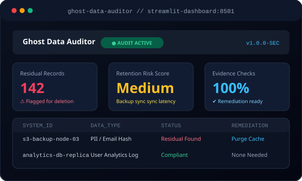

★ Featured Project
Ghost Data Auditor
AI-Powered Data Privacy & Cybersecurity Dashboard
Ghost Data Auditor is a specialized cybersecurity and privacy auditing application designed to investigate whether customer data has actually been deleted across an organization's systems or if residual "ghost" data persists.
The platform identifies lingering personal information, flags data synchronization and backup risks, and automatically produces evidence-based remediation recommendations for security teams.
Key Capabilities:
- Analyzes evidence related to customer data deletion requests
- Identifies residual personal information and potential retention risks
- Provides clear audit outcomes and actionable remediation recommendations
- Generates automated verification checks and audit reports
Python
Streamlit
Pandas
Data Privacy
Cybersecurity